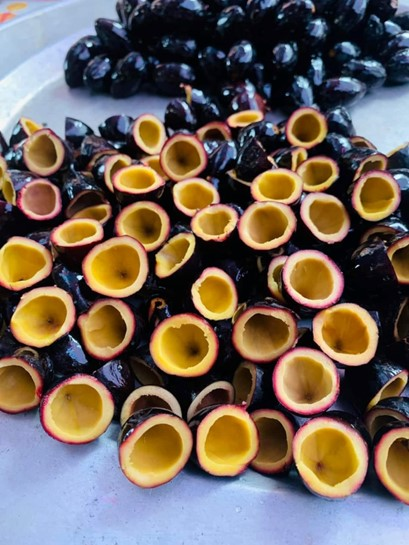
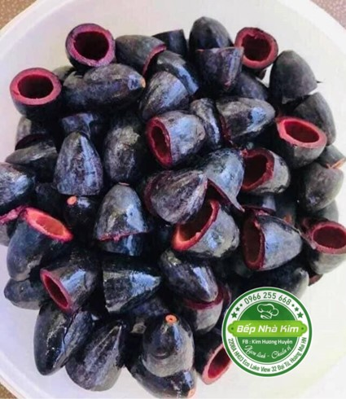
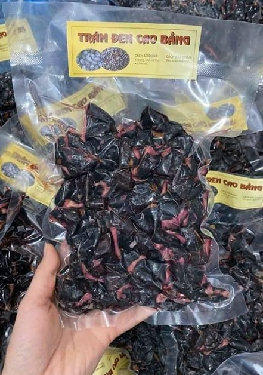
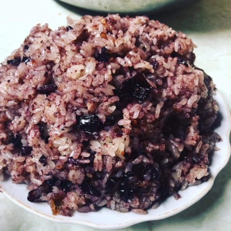
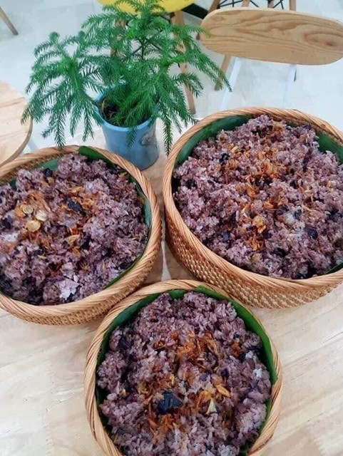
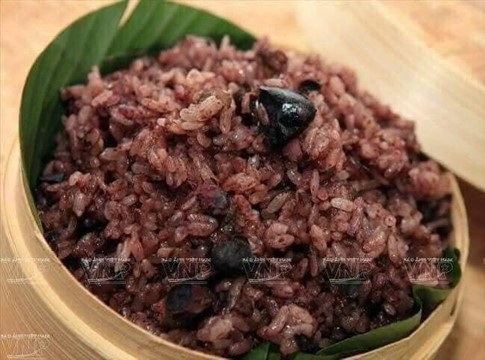
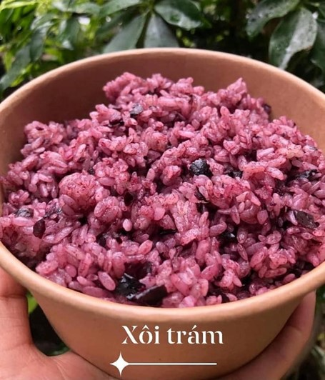

Xôi trám
Ở Việt Nam, có nhiều món xôi ngon, quen thuộc như xôi xéo, xôi ngô, xôi vò, xôi gấc, xôi ngũ sắc. Đến với đồng bào các dân tộc vùng Đông Bắc, xôi trám cũng gây thương nhớ trong thực khách bởi vị ngọt, bùi và ngậy của trám. Đây là món ăn đặc trưng của người Cao Bằng đã được Hội Kỷ lục gia Việt Nam - Tổ chức Kỷ lục Việt Nam công bố trong danh sách top 100 món ăn, ẩm thực đặc sản tiêu biểu của Việt Nam.
Với người dân Cao Bằng, xôi trám là một món ăn dân dã, truyền thống. Chị Hoàng Oanh ở thành phố Cao Bằng vẫn thường xuyên làm món xôi trám cho gia đình: “Tôi là người Cao Bằng. Thường thường, ngay bản thân gia đình nhà của tôi rất hay làm xôi trám đặc biệt là vào ngày giỗ và ngày rằm. Mặc dù làm xôi trám hơi cầu kỳ, mất công nhưng ăn lại rất là ngon”.
Quả trám đen chỉ to bằng ngón tay cái, thon nhọn ra hai đầu. Trám đen có hai loại là trám nếp và trám tẻ. Thông thường, người ta hay chọn trám nếp để đồ xôi vì có vị bùi, ngọt, thịt mềm chứ không cứng và giòn như trám tẻ. Phải chọn loại trám nếp chín cây có màu tím thẫm, quả còn tươi, đỉnh cuống còn dính nhựa, da quả căng, bóng, mịn không bị rộp. Ở Cao Bằng, trám đen ở thị trấn Đông Khê, huyện Thạch An là ngon nhất do khí hậu thổ nhưỡng hợp với loại cây này.
Để chế biến được món xôi trám khá kỳ công. Trước tiên, trám cần rửa thật sạch bằng nước ấm để ra hết chất nhựa. Sau đó, ta đổ nước ngập trám, bắc nồi lên bếp đảo đến khi nước nóng già khoảng 70 độ C thì tắt bếp và ngâm từ 30 phút đến một tiếng đồng hồ. Trám sau khi om mềm, chín, ta dùng dao khoanh tròn rồi tách đôi quả trám, lấy phần cùi và bỏ hạt.
Về phần gạo nếp để đồ xôi, chị Triệu Bích Phượng, Trưởng phòng nghiệp vụ Trung tâm văn hóa tỉnh Cao Bằng, thường hay chọn một loại gạo nếp hương có một mùi thơm rất quyến rũ: “Gạo nếp ở tỉnh nào cũng có nhưng ở Cao Bằng thì gạo ngon nhất là ở Bảo Lạc, một loại gạo đặc trưng của Cao Bằng. Còn trám thì ở Cao Bằng là món ăn rất là ngon và nếu như khách của các tỉnh bạn đến đến Cao Bằng thì đó cũng là một món ăn trong thực đơn để tiếp khách trong và ngoài tỉnh”.
Gạo nếp hương sau khi vo sạch và ngâm từ 8-10 tiếng, người ta cho vào chõ, trộn với cùng với trám, nấu trong khoảng 30 phút là chín tới. Mở nắp vung chõ xôi nóng hổi, mùi xôi thơm phảng phất mùi hương nhựa trám bùi và ngậy. Chị Hoàng Oanh cho biết, nhiều người Cao Bằng còn sáng tạo cho món xôi trám thêm ngon bằng cách: “Tôi cho một ít thịt băm đã xào thơm cùng với hành. Sau khi xôi chín tới, tôi chỉ việc cho thịt băm đã xào vào, trộn cùng với xôi trám rồi đem ra ăn”.
Xôi trám dẻo, thơm, không dính tay, đơm ra đĩa có màu tím hồng khá đẹp. Món xôi trám ngon nhất khi ăn cùng muối vừng đen hoặc lạp xưởng Cao Bằng. Mùi thơm của hạt nếp dẻo hòa lẫn cùng vị bùi, béo ngậy, giàu chất dinh dưỡng của trám rừng, ăn nhiều không thấy ngán.
Trám đen còn có thể làm các món ăn khác như trám nhồi thịt hay trám rim với tóp mỡ hoặc thịt ba chỉ. Vị cay cay của tiêu, gừng, thơm bùi của trám và sự béo ngậy của thịt hòa quyện tạo thành món ăn đặc sản, mang hương vị riêng biệt, ngon khó cưỡng.
Dừng chân ở Cao Bằng, du khách hãy một lần nếm thử vị ngon của xôi trám và các món ăn từ trám để cảm nhận hương vị độc đáo của ẩm thực Cao Bằng.